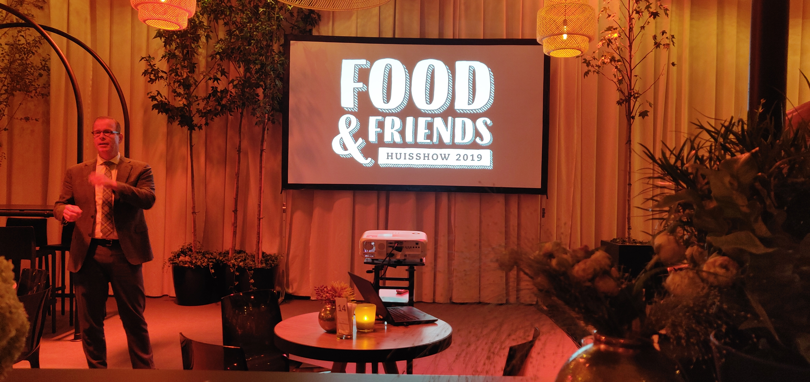
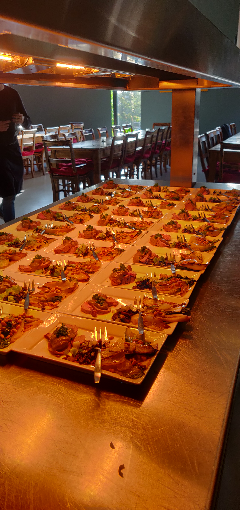

Mijn naam is Jeromme Boot. Ik ben 24 jaar oud en woon in Venray. Momenteel studeer ik Finance & Control aan de Hogeschool van Arnhem en Nijmegen. Binnen de opleiding Finance & Control heb ik gekozen voor de minor Smart Industry.
Tijdens Smart Industry heb ik de nieuwste technologieën leren kennen, maar nog belangrijker: ik heb ze leren toepassen!
Hoe ben ik tot de keuze Smart Industry gekomen?
Ik heb een passie voor innovatie. Daarnaast was ik op zoek naar een echte uitdaging. Ik wilde uit mijn "comfortzone" stappen door me op onbekend terrein te geven.
Het uitbreiden van mijn professionele netwerk was tevens een drijfveer om te kiezen voor de minor Smart Industry. Binnen de minor Smart Industry wordt er in teams gewerkt waarvan de teamleden verschillende studie-achtergronden hebben, ideaal om mijn professionele netwerk uit te breiden!
Wil je meer weten over mijn achtergrond? Klik dan hier.
Op mijn portfolio vind je diverse onderdelen. Onder andere inzicht in mijn project bij Modderkolk te Wijchen, opdrachten uitgevoerd bij de Hogeschool van Arnhem en Nijmegen en een zelfreflectie.
Vragen? Onderaan de pagina vind je mijn contactgegevens!
De minor Smart Industry is opgedeeld in vier verschillende categoriën: Smart Start,
Smart Business, Smart Connection en Smart Technology. Naast deze vakken heb ik verschillende workshops gevolgd en bedrijfsbezoeken gedaan.
SMART START
Tijdens de eerste zes weken ben ik getraind om kansen en uitdagingen binnen Smart Industry bij ondernemingen te leren herkennen en uit te werken tot een realistisch plan.
Door actief deel te nemen aan de hier aangeboden activiteiten, heb ik een gedegen professionele basis gevormd om een een waardevolle bijdrage leveren aan de Smart Industry ambities van mijn opdrachtgever.
De opdrachten zijn, om kwaliteit te bewaken, constant getoetst aan de volgende criteria:
WEEK 1 - SMART RESEARCH KRUISPUNTEN
WEEK 2 - SMART RESEARCH SMART INDUSTRY
WEEK 3 - SMART RESEARCH VALUE PROPOSITION
WEEK 4 - SMART RESEARCH PROCESSEN
WEEK 5 - SMART RESEARCH ORGANISATIES
WEEK 6 - SMART RESEARCH SAMENWERKEN
SMART BUSINESS
Het doel van Smart Business is om kennis te vergaren die toepasbaar zijn op organisaties. Procesoptimalisatie en het in kaart brengen van bedrijfsprocessen en businessmodellen staan hier centraal.
Onderstaande video bevat een introductie van mezelf. Centraal staat hier wie ik ben, wat de minor inhoudt en wat mijn (verwachte) leerpunten gaan zijn.
Na het creëren van een korte introductievideo is het zaak om mijn concrete taken en leerdoelen in kaar te brengen. Om inzicht te generen in mijn taken en leerdoelen over de minor heb ik onderstaande value map en personal profile ingevuld.
Onderstaand document is gemaakt ter voorbereiding op het bezoek bij Elk Nijmegen. Hierbij heb ik de vijf pijlers van Lean in kaart gebracht. Vervolgens heb ik deze theorie toegepast binnen het bedrijf.
Ter voorbereiding op het bezoek van verzekeraar Be Informed heb ik onderzoek gedaan naar het gebruik van The Internet of Things binnen verzekeraars. Zo kunnen verzekeraars op verschillende manieren
kosten besparen door het gebruik van The Internet of Things. Daarnaast draagt het op verschillende manieren bij aan het genereren van aanvullende business binnen de verzekeraarbranche.
Tijdens het college is er in groepsverband een BMC ingevuld. Zowel van de huidige als gewenste situatie. Daarnaast is er een concept ontwikkeld voor een app die het makkelijk maakt om o.a. hulpdiensten in te schakelen.
De app bestaat uit een preventiemodus die automobilisten het gebruik van een telefoon in de auto ontmoedigt.
Daarnaast beschikt de app over een functie om een schadeclaim in te dienen die meteen wordt verwerkt door de verzekeraar.
Tevens verschijnt er een kaart met in de buurt aangesloten en betrouwbare schadebedrijven die kunnen woren ingeschakeld.
Gebruikers van de app kunnen worden beloond met korting op hun premie.
SMART CONNECTION
Smart Connection stond in het teken van Web Development. In een tijdsbestek van zes weken heb ik geleerd om met HTML, CSS, Javascript,
databases, API's en Machine Learning te werken. Dit portfolio is daar onder andere een resultaat van! Als "leek" op het gebied van technologie zie ik dit onderdeel van de minor als een ware uitdaging. De hulp die ik kreeg van mijn medestudenten was zeer welkom.
Hieronder vind je een aantal mogelijkheden van Javascript:
Dit JavaScript laat de huidige systeemtijd (op je desktop) zien, Greenwich Mean Time (GMT), en tijd en datum van een stad naar keuze.
Onderstaande tool telt twee getallen bij elkaar op. Deze tool is gemaakt door middel van Javascript. Er wordt gebruik gemaakt van een X en Y variabele.
Onderstaande tool laat de huidige tijd en datum .
Hieronder kan de huidige weersomstandigheid voor Nijmegen worden afgelezen.
SMART TECHNOLOGY
In het kader van The Internet of Things heb ik een IOT-schakeling gebouwd. Deze schakeling zorgt voor het automatiseren van de lichtintensiteit
en aarde-vochtigheid van een plant. Allereerst heb ik een IOT-schakeling ontworpen. Hierbij lag de focus vooral op het programmeren en monteren van de Arduino. Als Finance & Control student had ik dit aardig snel onder de knie. Na het ontwerpen van de (werkende) Arduino kon ik aan de slag met het ontwerpen van een PCB.
Met behulp van AutoCAD Eagle heb ik schematisch de opzet overgenomen. Na het ontwerpen van een schematische opzet heb ik een daadwerkelijk PCB gerealiseerd, wat vervolgens in China is geproduceerd.
Na het ontwerpen van de PCB stond het modelleren van een behuizing centraal. Het modelleren van de behuizing heb ik gedaan door middel van het programma SolidWorks. Met behulp van mijn medestudenten is het uiteindelijk gelukt om een behuizing te modelleren
waar, naast plek voor de PCB, tevens plaats was voor een voeding en een relais.
Na het modelleren van de behuizing heb ik, na het volgen van een snelcursus solderen, de benodigde componenten gesoldeerd aan mijn PCB.
Bedrijfsbezoeken & workshops
ELK® NIJMEGEN
Op 25 september 2019 heb ik een bezoek gebracht aan Elk te Nijmegen. Elk is een modern familiebedrijf in vastgoedonderhoud en renovatie.
Voor het bezoek heb ik me verdiept in Lean en Agile. Tijdens de rondleiding heb ik gemerkt dat Elk volledig Lean is ingericht. Het is zeer interessant om de theorie uitgevoerd te zien in de praktijk. Daarnaast heb ik geleerd hoe een bedrijf en de werkwijze van haar werknemers verbeterd kan worden.
Na de rondleiding heb ik een Agile/scrum-training gevolgd van Ali Hajou van Blinklane. De interactie door middel van opdrachten zorgde daarnaast voor groepsbinding.
ATAG DUIVEN
Op 10 oktober 2019 heb ik deelgenomen aan de studentendag van Atag. Alles bij ATAG draait om koken, in de breedste zin van het woord.
Van stoomovens tot koelkasten en van inductiekookplaten tot afzuigkappen. Tijdens deze dag heb ik inzicht gekregen in de werkwijze
en processen van Atag. Zowel de R&D-afdeling, werkplaats en showroom kwamen aan bod. Een kijkje achter de schermen heb ik als zeer interessant ervaren. Daarnaast is het
interessant en leerzaam om te zien welke technieken Atag hanteert.

MASTER YOUR MIND & OWN YOUR LIFE - ONER ACADEMY
Op 15 oktober 2019 heb ik deelgenomen aan de Masterclass "Master your mind & your own life". Ilke Oner heeft uitgelegd hoe een brein werkt en waarom de mens vaak zijn of haar eigen rem is.
De verschillende ademhalingsoefeningen hebben gezorgd voor het bewust omgaan met stress. De masterclass had dan ook toegevoegde waarde voor mijn persoonlijke ontwikkeling.
HET KOOKCOLLEGE
Op 25 oktober 2019 heb ik deelgenomen aan het Kookcollege te Wijchen. Deze workshops zijn uiteraard ideaal voor netwerkclubs, relatie-evenementen en teambuilding.
Samen koken of barbecuen verbindt de mensen aan elkaar. Naast het samenwerken stond het planmatig werken en het maken van een reële planning centraal. Tijdens deze workshop heb ik geleerd om samen te werken met verschillende medestudenten.
Daarnaast heb ik bewust, als student met een leidinggevend karakter, er voor gekozen om anderen het voortouw te laten nemen. Al met al heb ik tijdens deze dag meer geleerd dan ik op voorhand had verwacht.

NXP NIJMEGEN
Op 1 november 2019 heb ik een bezoek gebracht aan NXP Nijmegen. NXP Semiconductors is de voormalige halfgeleiderdivisie van Philips. De letters NXP staan voor Next eXPerience.
Deze excursie heeft mijn kennis over PCB's verbreed. Het was zeer leerzaam en interessant om te zien hoe een printplaat daadwerkelijk geproduceerd wordt. Daarnaast ben ik meer te weten gekomen over microprocessoren. Een microprocessor bevat alle of de meeste functies van een processor op een enkele geïntegreerde schakeling.
PAUL KALIS
Op vrijdag 15 november 2019 vond de workshop van Paul Kalis plaats. Hoewel ik niet kon deelnemen aan deze workshop hebben mijn groepsgenoten en ik een Business Model Canvas (BMC) van Modderkolk gemaakt. In dit BMC is zowel de huidige
als de nieuwe situatie geschetst. Onder andere aan de hand van de gepubliceerde slides heb ik me verdiept in het Target Operating Model. Een Target Operating Model (TOM) wordt gebruikt om te beschrijven hoe een organisatie haar producten en diensten aanbiedt. Het is opgebouwd vanuit de strategie van de organisatie en beschrijft
hoe deze haar mensen, informatie, processen en IT-systemen inzet om de klantpropositie daadwerkelijk te leveren. Daarnaast kan het helpen inzicht verschaffen in de effecten van innovaties op de operatie.
OCEANZ 3D PRINTING
Op 21 november 2019 ben ik op excursie geweest naar Oceanz te Ede. Oceanz 3D printing wil mensen, bedrijven en organisaties helpen met betekenisvolle 3D printproducten en -oplossingen.
Tijdens deze (korte) excursie heb ik meer inzicht gekregen in het fenomeen "3D-printen". Het gebruik van diverse materialen en het gebruik van poeders stond hierbij centraal.
De excursie was een goede toevoeging op het modelleren van de behuizing van mijn PCB en heeft mijn kennis verbreed.
PROJECT MODDERKOLK
Een project omtrent interne communicatie
Modderkolk is een toonaangevend installatiebedrijf in industriële elektrotechniek. Modderkolk is gevestigd in Wijchen en al meer dan 90 jaar actief in de technische dienstverlening. Ze streven naar een eeuwig florerend bedrijf.
Namens de minor Smart Industry heb ik samen met Djordi Wedema en Jille van Dijk bij Modderkolk een project uitgevoerd omtrent het verbeteren van de (interne) communicatie.
De communicatie binnen Modderkolk binnen de verschillende cellen verloopt goed. Echter gebruikt iedere cel een eigen manier van communiceren. De ene cel gebruikt Microsoft Teams, terwijl de andere cel voornamelijk gebruik maakt van Outlook. Ook heeft Modderkolk mensen in zowel de binnen- als buitendienst werken en hierdoor beschikken niet alle medewerkers ten allen tijde over een computer.
Dit heeft op den duur geleid tot een communicatieprobleem. Doordat iedere cel een communicatiemiddel naar keuze gebruikt, ontstaat een probleem als tussen de cellen en over de cellen heen gecommuniceerd moet worden. Vanuit het management is een vraag ontstaan hoe de communicatie tussen de zeven cellen en de communicatie naar partners en klanten toe efficiënter en verbeterd kan worden.
Het uitvoeren van het onderzoek heeft als doel het geheel van communicatie binnen Modderkolk te optimaliseren.
Dit leidt tot het optimalisatie van het faciliteren van werkprocessen, het optimaal gebruik van aanwezige kennis, het motiveren en (ver)binden van medewerkers en het richten van de organisatie.
De hoofdvraag van het project luidt als volgt: “Hoe kan het geheel van communicatie, bestaande uit interne en externe communicatiemiddelen, van Modderkolk effectiever en efficiënter ingezet worden?”
Binnen ons onderzoek staat, naast technische innovatie, sociale innovatie centraal. Gebaseerd op de uitkomsten van de Erasmus Concurrentie- en Innovatie Monitor 2017 blijkt namelijk dat sociale innovatie verhoudingsgewijs drie maal zo sterk bijdraagt aan het innovatiesucces van organisaties ten opzichte van technologische innovatie.
Sociale innovatie dus is van cruciaal belang om het innovatievermogen van Modderkolk te bevorderen. Het belang van sociale innovatie wordt namens het projectteam tevens teruggekoppeld aan het docententeam van de minor Smart Industry.
Heb je door het lezen van deze korte inleiding meer interesse gekregen in mijn project? Een link naar mijn volledige onderzoek vind je hieronder.
Om de voortgang en kwaliteit van ons project te bewaken is er gedurende het project gewerkt met een brown paper. Dit brown paper werd op wekelijkse basis besproken en geëvalueerd met Nick de Beijer, verbeterspecialist binnen Modderkolk. Dit heeft ons geholpen te allen tijde de kwaliteit te waarborgen en planmatig te werk te gaan.
Naast het schrijven van een onderzoeksrapport (met bijbehorende aanbevelingen) hebben we via Balsamiq een mockup gemaakt van een (mogelijke) mobiele applicatie:
Gedurende het project ben ik bewust op een 'Smart'-manier te werk gegaan. Hierbij heb ik, naast Lean en Agile te werken, extra gelet op het gebruik en functionaliteiten van diverse programma's en software.
Tijdens ons project zijn we te werk gegaan met de volgende programma's/hebben we onderstaande werkwijze toegepast:
Google drive (samenwerken en filesharing via de cloud)
Modderkolk Cloud (workspace)
Magic (ERP-software)
Microsoft Teams
QR-code (Filesharing door middel van een digitale code)
Balsamiq (software om mockups te creëren)
Voor het eindseminar hebben mijn projectteam en ik een korte videopitch gecreëerd:
COMPETENTIES
Behaalde competenties en zelfreflectie
Gedurende de minor heb ik op verschillende momenten, bijvoorbeeld tijdens de workshop, bedrijfsbezoeken en het project, aan mijn competenties gewerkt. In principe is iedere interactie met een activiteit of met betrokkenen (studenten, coaches, opdrachtgevers, etc.) een toetsmoment voor me geweest (Continuous Assessment).
Alhoewel ik veel taken in teamverband heb uitgevoerd, heb ik gedurende de minor veel aandacht besteed aan mijn individuele prestaties.
Met behulp van de gemaakte voorbereiding- en weekopdrachten en de bijgewoonde "Smart Start" workshops van week 4, 5 en 6 heb ik gewerkt aan de competentie herkennen/analyseren/diagnosticeren.
Deze competentie wordt beschreven als: "Beschrijft de mate van volwassenheid van een organisatie m.b.t. Smart Industry in een business case".
In week 4 heb ik de volwassenheid van Toyota m.b.t. Smart Industry beschreven. Lean en Agile stonden hier centraal. Alvorens ik het stuk heb geschreven heb ik vooronderzoek gedaan naar de thema's Lean, Agile en Smart Industry. Het Toyota Production System is toonaangevend op het gebied van Lean en Agile.
In week 5 stond het gebruik van de (Smart) Supply Chain centraal. In de weekopdracht heb ik beschreven hoe Smart Technologies warehousing kunnen optimaliseren met het oog op Smart Supply Chain. Dit heb ik grafisch weergegeven in een Piktochart. Daarnaast heb ik een informatieve tekst geschreven die dieper ingaat op de materie.
In week 6 heb ik het belang van bedrijfscultuur en visievorming binnen een organisatie beschreven. Tijdens de workshop en de voorbereidingsopdracht is er sprake geweest van een vooronderzoek naar deze ontwikkelingen.
Innoveren/Ontwerpen
De competentie Innoveren/Ontwerpen wordt ingevuld door de definitie: "De student is in staat vernieuwende ideeen te ontwikkelen en deze te vertalen naar concepten voor processen, producten of diensten"
Projectmanagment
Gedurende de minor heb ik op verschillende momenten, bijvoorbeeld tijdens de workshop, bedrijfsbezoeken en het project, aan mijn competenties gewerkt. In principe is iedere interactie met een activiteit of met betrokkenen (studenten, coaches, opdrachtgevers, etc.) een toetsmoment voor me geweest (Continuous Assessment).
Alhoewel ik veel taken in teamverband heb uitgevoerd, heb ik gedurende de minor veel aandacht besteed aan mijn individuele prestaties.
Onderzoeken
Gedurende de minor heb ik op verschillende momenten, bijvoorbeeld tijdens de workshop, bedrijfsbezoeken en het project, aan mijn competenties gewerkt. In principe is iedere interactie met een activiteit of met betrokkenen (studenten, coaches, opdrachtgevers, etc.) een toetsmoment voor me geweest (Continuous Assessment).
Alhoewel ik veel taken in teamverband heb uitgevoerd, heb ik gedurende de minor veel aandacht besteed aan mijn individuele prestaties.
Communiceren/Adviseren
Gedurende de minor heb ik op verschillende momenten, bijvoorbeeld tijdens de workshop, bedrijfsbezoeken en het project, aan mijn competenties gewerkt. In principe is iedere interactie met een activiteit of met betrokkenen (studenten, coaches, opdrachtgevers, etc.) een toetsmoment voor me geweest (Continuous Assessment).
Alhoewel ik veel taken in teamverband heb uitgevoerd, heb ik gedurende de minor veel aandacht besteed aan mijn individuele prestaties.
Samenwerken/Netwerken
Gedurende de minor heb ik op verschillende momenten, bijvoorbeeld tijdens de workshop, bedrijfsbezoeken en het project, aan mijn competenties gewerkt. In principe is iedere interactie met een activiteit of met betrokkenen (studenten, coaches, opdrachtgevers, etc.) een toetsmoment voor me geweest (Continuous Assessment).
Alhoewel ik veel taken in teamverband heb uitgevoerd, heb ik gedurende de minor veel aandacht besteed aan mijn individuele prestaties.
Professionaleren/Verantwoord handelen
Gedurende de minor heb ik op verschillende momenten, bijvoorbeeld tijdens de workshop, bedrijfsbezoeken en het project, aan mijn competenties gewerkt. In principe is iedere interactie met een activiteit of met betrokkenen (studenten, coaches, opdrachtgevers, etc.) een toetsmoment voor me geweest (Continuous Assessment).
Alhoewel ik veel taken in teamverband heb uitgevoerd, heb ik gedurende de minor veel aandacht besteed aan mijn individuele prestaties.